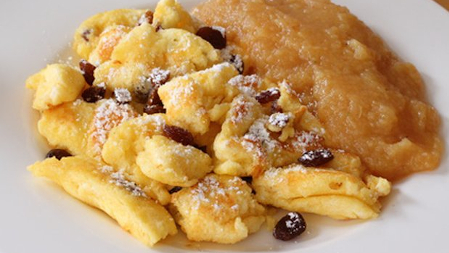

| Österreichischer Kaiserschmarrn |
|
|
|  |
|
Zutaten für 3 Portionen:
200 g Mehl
30 g Zucker
1 Prise Salz
4 Stk Eier
300 ml Milch
40 g Butter
30 g Rosinen
1 Prise Staubzucker zum Bestreuen
|
Zubereitung
Für diesen köstlichen Kaiserschmarrn zuerst in einer Schüssel Mehl, Zucker, Salz und Dotter mit der Milch zu einem glatten, dickflüssigen Teig verrühren.
In einer anderen Schüssel die Eiklar zu einem steifen Schnee schlagen und danach unter den dickflüssigen Teig heben.
Die Butter in einer großen, flachen Pfanne aufschäumen lassen, den Teig langsam eingießen, und auf beiden Seiten anbacken.
Anschließend die Pfanne in ein vorgeheiztes Backrohr bei mäßiger Hitze (Heißluft ca. 180°C) für 10-12 Min. fertig backen - bis der Kaiserschmarren leicht goldbraun ist.
Danach die Pfanne aus dem Backrohr nehmen und den fertigen Teig mit zwei Gabeln in unregelmäßige Stücke zerreißen.
Nun die Rosinen hinzufügen, gut verrühren und die Pfanne nochmals für ca. 1 Minute in den noch heißen Backofen.
Den Schmarren auf Tellern anrichten, mit Zucker bestreuen und mit beliebigem Kompott oder auch Apfelmus servieren.